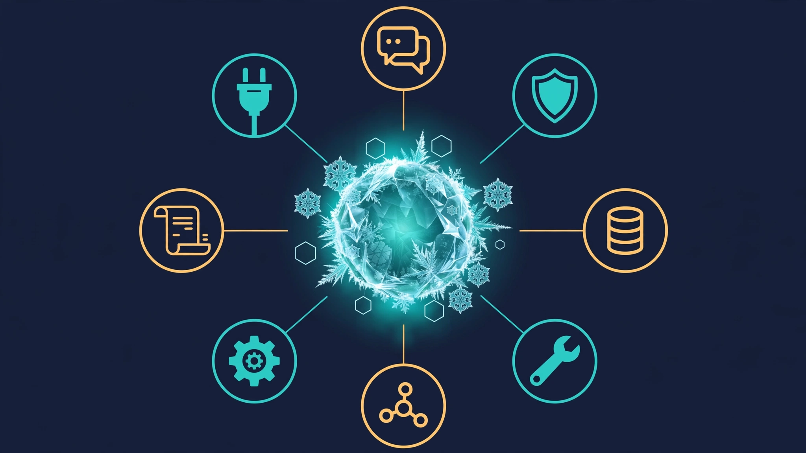
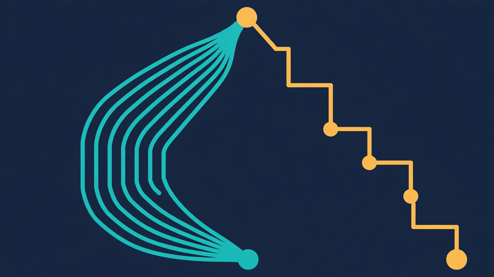

Let your agent improve its own playbook: hands-on with Google Research's Harness²
The model is rarely the thing holding your agent back. What decides whether an agent handles a task well is the scaffolding around the model — its prompts, tools, memory, guardrails and scripts — and that scaffolding is usually tuned by hand, one guess at a time. Google Research's Harness² automates the tuning: it proposes harness edits, probes them by running them, and keeps only the changes the evidence supports. This guide runs its free local demo and shows you the adopted harness, the lesson it stored, and what a paid benchmark run would actually take.
- What: Harness², a plug-and-play framework for recursive agent harnessing in an open world.
- Version and licence: 0.1.0, Apache-2.0.
- Project: google-research/harness2 on GitHub, created 6 October 2026, 20,269 stars and 1,985 forks at the time of writing.
- Demo: no model credentials, no API key, no GPU — deterministic editors and real Python executions.
- Benchmarks: JobBench, LAB and WorkBuddy-Bench, with OpenCode and Codex executors.
- Cost: the demo is free; model-backed runs incur API costs per task.

Most agent improvement work starts in the wrong place: the model. You swap models, pay for a bigger one, or queue a fine-tuning run, when the thing actually deciding the outcome is the scaffolding around the model — the prompts, tools, memory, guardrails, and scripts that turn a language model into an agent. Google Research calls that scaffolding a harness, and its new open-source framework Harness² improves the harness itself, with the model weights left untouched. The repository, google-research/harness2, was created on October 6, 2026, and at the time of writing it has 20,269 stars and 1,985 forks under an Apache-2.0 license. Its headline result, reported in the README, is that a single Harness² step improves GLM-5 and Gemini 3.5 Flash over their base harnesses by up to 11.5 points on WorkBuddy-Bench, 4.5 points on JobBench, and 11.8 percentage points on LAB's partial pass rate.
This tutorial runs the real thing, not a description of it. You will install Harness², run its local demo — which needs no model credentials and no API key — and read the adopted harness and the lesson it stored for the next task. By the end you will know exactly what a Propose–Probe–Compose step does, what the two recursion modes change, and what a paid, model-backed benchmark run would require before you spend anything on it.
What you'll need
- Linux and Python 3.12. The README specifies Linux, Python 3.12, and
uv. This tutorial was verified on Python 3.12.3 on a 2-core Linux VM. If you haveuv, use the README's install commands; thepipequivalent below is the path actually run here, so every command in it is verified. - No model account, no API key, no GPU for the demo. The demo uses deterministic editors and real Python executions, not a language model.
- About 15 MB of disk for the repository clone, plus a virtual environment. The demo itself finishes in seconds and writes a few megabytes of run output.
- For the optional model-backed section only: Node.js 20+, the Google Cloud CLI, a Vertex AI project, and a budget for API calls. That section is clearly marked, and nothing in it is required to complete the tutorial.
The harness, in one minute
Harness² exposes eight editable components around the model: system prompt, guardrails, memory, tool guidance, subagents, skills, scripts, and plugins. Together they control how context is built, what tools the agent sees, how it delegates, and how it behaves inside the tool loop. A harnessing step edits those components instead of retraining anything.
The core step is Propose–Probe–Compose. First, a harness editor proposes candidate edits: some aimed at a general weakness, some aimed at the specific task. Next, candidate probes execute those edits on the same task, so each candidate is judged on observed behaviour rather than on how plausible its edit sounds. Finally, a composer combines the changes the evidence actually supports into a refined harness and discards the rest. That last point is the whole design: without a ground-truth answer key for open-ended work, the comparison between executions is the signal.
Two levels of recursion sit on top of that step. Task-level recursion refines the harness for the task in front of you. Harnessing-level recursion stores the adopted harness and its evidence-supported lessons in a persistent improvement library, so the next task starts from what earlier tasks learned. You will see both levels fire in the demo: the second demo task starts with one library entry already in place, left by the first.
Step 1 — Install Harness²
Clone the repository and create a virtual environment. Version 0.1.0 is the version in pyproject.toml at the commit verified here (1cfe254).
git clone https://github.com/google-research/harness2
cd harness2
python3 -m venv .venv
source .venv/bin/activate
pip install -e '.[render]'The package itself declares no runtime dependencies; the [render] extra adds openpyxl and python-pptx for report rendering. If you prefer the README's path, replace the last three lines with uv venv --python 3.12 .venv, source .venv/bin/activate, and uv pip install -e '.[render]'. Confirm the console scripts exist:
harness2-demo --help
harness2 --helpYou should see harness2-demo accept --output, --k, and --mode {parallel,sequential,both}, and harness2 accept --bench {jb,wb,lab} with --substrate {oc,cx} for the OpenCode and Codex executors. If harness2-demo is not found, your virtual environment is not activated — the scripts live in .venv/bin/.
Step 2 — Run the local demo
Run the demo exactly as the README prescribes, with a recursion budget of 2 and both modes:
harness2-demo --output runs/demo --k 2Expected output, verified here in about 11 seconds:
[accounting] 1/2 ok ledger-1
[accounting] 2/2 ok ledger-2
Local demo: 2 tasks completed; 0 failed. .../runs/demo/demo.jsonThe demo domain is accounting. Its two tasks, ledger-1 and ledger-2, are small ledger-summing jobs backed by CSV sources under runs/demo/sources/. The first ledger contains a credit of −20.10 alongside debits of 100.25 and 5.00 — a detail that matters in the next step, because the base harness gets the total wrong.
The command exits non-zero if any task fails, so a clean run is unambiguous: 2 completed, 0 failed.
Step 3 — Read what the demo actually did
Open the summary first:
python3 -c "import json; d = json.load(open('runs/demo/demo.json')); print(d['domain'], d['n_tasks'], d['done'], d['failed'], d['execution_count'], d['editor_calls'])"Verified output: accounting 2 2 0 28 32 — 2 tasks, both done, 28 executions, 32 editor calls. That is the whole demo: no model calls, no cost, and a complete audit trail under runs/demo/.
Next, read the adoption decision for the first task:
cat runs/demo/runs/demo-oc-agg2/ledger-1/reflection/agg2/adoption.jsonIt records the chosen candidate (agg1), the two candidates compared, and the reason in one line: “The signed total matches the source ledger.” The stage notes in runs/demo/runs/demo-oc-agg2/ledger-1/summary.json say why that mattered: “Keep signed amounts: the base total omitted credits in the source ledger.”
Then read the lesson the system kept. Open runs/demo/library/k2/agg/accounting/harnesses/ledger-1/EXPERIENCE.md and you will find the mechanism in miniature: the winning edit dropped the positive-only filter from scripts/summarize.py, the probe total then included the credits the base run omitted, and the transferable lesson is stated as a cue — when a ledger includes credits and debits, include both signs when summing in scripts/summarize.py — with the evidence and a confidence note attached. This is harnessing-level recursion, written down: not a vague “the agent learned”, but a named component, a named edit, and the observed contrast that justified it.
Finally, confirm the library carried over to the second task. In demo.json, ledger-1 starts with zero library entries for both modes, while ledger-2 starts with one entry for each mode — the entry ledger-1 left behind. The library index at runs/demo/library/k2/agg/accounting/INDEX.md lists both entries with their cues, so you can browse earlier harnesses before trusting one on a new task.

Step 4 — Run one mode at a time and change the budget
The default demo runs both modes. Run them separately to see what each mode costs and does:
harness2-demo --output runs/demo-seq --k 1 --mode sequential
harness2-demo --output runs/demo-par --k 1 --mode parallelBoth verified here at k 1: 2 tasks completed, 0 failed, with the sequential run using 8 executions and 8 editor calls. Compare that with the k 2, both-modes run (28 executions, 32 editor calls) and the scaling rule is visible: raising --k raises the number of candidate probes and compositions, and therefore the cost of a model-backed run, while --mode chooses the shape of the search. Parallel recursion probes several candidate harnesses and composes from their shared evidence; sequential recursion carries the refined harness and its evidence through successive Propose–Probe–Compose steps. Parallel explores wider, sequential refines deeper — the README's own summary, and the demo's directory layout (demo-oc-agg2 versus demo-oc-seq2) shows the two searches as separate, inspectable runs.
Try one more variation yourself: re-run the k 2 demo into a fresh output directory and diff the two EXPERIENCE.md files. Deterministic editors should give you the same lesson, and if they do not, you have found exactly the kind of instability worth knowing about before you trust a harness on production work.

Step 5 (optional, paid) — What a model-backed benchmark run takes
Everything above is free. A real benchmark run is not, and this section is not executed in the tutorial — it is the verified command sequence from the README, with its prerequisites stated so you do not start it blind.
Prerequisites: Node.js 20+, the Google Cloud CLI, and the benchmark dependencies. LAB additionally needs Pandoc and Poppler; WorkBuddy-Bench needs Docker. Then configure your models:
cp .env.example .env
# Edit .env with your Vertex AI project and model IDs.
gcloud auth application-default loginInstall one benchmark, check it, run a single task, then judge and report — using LAB as the README's example:
harness2-setup lab
harness2-check --bench lab
harness2 --bench lab --k 1 --mode parallel \
--only-domains antitrust-competition --max-tasks 1
harness2-judge --bench lab --k 1 --mode parallel
harness2-report --bench lab --k 1 --mode parallelThree rules from the README and the CLI help govern this step. First, judging and reporting must use the same benchmark, executor, subset, --k, --mode, and seed as the refinement run. Second, start small: the harness2 help text warns that each task costs R = 4k task-executor rollouts and P = 3k improver sessions, so a --max-tasks 1 run is the only sane first run. Third, preview before paying: harness2 accepts --dry-run, which prints the exact task stream and namespaces without creating a proposer, touching a substrate, or validating a model setting. Use it after setup, before any paid run.
Two warnings belong in any honest account. The README states that executor network access is unrestricted and that Codex runs with its sandbox disabled, so configure network restrictions before evaluation — public benchmark rubrics may be reachable online, and an evaluation that can read its own answer key proves nothing. And the repository disclaimer states plainly that this is not an officially supported Google product, which matters for support expectations on a three-commit repository.
When to use this vs alternatives
Use Harness² when your agent's failures look like scaffolding failures: it ignores a tool, mishandles a format, drops a sign, or repeats a mistake a previous task already taught you how to avoid. That is the failure shape the demo reproduces, and it is the shape Propose–Probe–Compose is built to fix — an edit proposed, executed, and kept only because the execution changed.
Do not reach for it when the model itself is the bottleneck. If the task needs knowledge the model does not have, reasoning it cannot do, or a context window it does not offer, no harness edit fixes that; that is a model, retrieval, or task-decomposition decision. Do not use it as a substitute for hand review either: the demo's lesson is only as good as its probe, and a probe that cannot distinguish a right answer from a wrong one will happily adopt a confident mistake and store it in the library for the next task.
Compared with hand-tuning prompts, Harness² trades your time for compute: it runs the candidates and keeps the evidence trail, but it also multiplies the number of executions per task. Compared with fine-tuning, it is cheaper, reversible, and model-agnostic — you edit files, not weights — but it cannot teach the model anything new. The right mental model is a version-controlled, evidence-checked prompt-and-tool workshop, not an autopilot.
Gotchas worth knowing before you rely on it
- The demo proves the machinery, not the benchmark gains. The 11.5-point, 4.5-point, and 11.8-point figures are the README's reported results on professional benchmarks with GLM-5 and Gemini 3.5 Flash. Reproducing them needs paid model access and the full benchmark setup. Do not quote them as your own measurements.
- Results live under
runs/. Task summaries, deliverables, adopted harnesses, reflection notes, and evaluation results are organized by benchmark and subset. Repeating the same command resumes a run; use a newHARNESS2_RUNS_DIRwhen you change models or task selection, or you will mix runs. - Choose one benchmark per command. JobBench (
jb), LAB (lab), and WorkBuddy-Bench (wb) are installed withharness2-setup jb,harness2-setup lab, andharness2-setup wbrespectively; WorkBuddy also takes--subset office,--subset web, or--subset codeon every command after setup. - Every command supports
--help. The benchmark commands were verified here via their help text; when a flag's behaviour is unclear, read it there before spending on a run.
The takeaway
Harness² makes one useful claim testable in under a minute: an agent's harness is editable, measurable, and accumulative. The demo shows all three — an edit to a script, a probe that proves the edit helped, and a library entry that hands the lesson to the next task. Run the demo, read the EXPERIENCE.md file, and decide from evidence whether your own agent's recurring failures are harness failures. If they are, the paid benchmark path is documented and start-small. If they are not, you have spent eleven seconds learning that, which is the cheapest negative result in agent engineering.
Sources
Frequently asked questions
Do I need a model API key to try Harness²?
No. The local demo runs with deterministic editors and real Python executions and needs no model credentials. Model-backed benchmark runs need a Vertex AI project and paid model access.
What does Harness² actually change?
It edits the eight harness components around a frozen model — system prompt, guardrails, memory, tool guidance, subagents, skills, scripts and plugins — not the model weights.
How much does a model-backed run cost?
Each task costs R = 4k task-executor rollouts and P = 3k improver sessions, so start with one task and use --dry-run to preview the task stream before paying for a run.